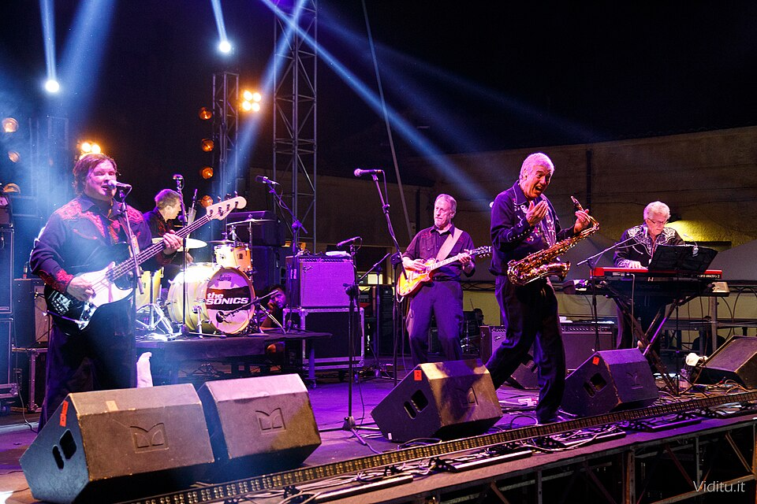

The Witch by The Sonics was recorded in Seattle in July 1964 and released that fall.
It never reached a national chart, yet it sold about 29,000 copies in the Seattle-Tacoma market.
Gerry Roslie's screams and a gatling-gun snare made it one of the loudest records of its day.

Table of Contents
- Who Wrote The Witch?
- Recording in Seattle
- What Makes It Sound So Wild?
- Radio Fight and Release
- Covers and Legacy
- FAQ
Who Wrote The Witch?
Gerry Roslie wrote the song, and he also sang it and played electric piano.
He first aimed it at the dance-craze trend, a Halloween-season novelty.
The lyrics were then rewritten to snarl at a treacherous woman.
The change gave the song its bite.
How a Basement Demo Won a Record Deal
Buck Ormsby of the Wailers heard the song in drummer Bob Bennett's basement in 1964.
The Wailers ran Etiquette Records, and Ormsby was sold on the spot.
He signed the Tacoma band and became its producer.
Read the full story of The Sonics for the lineup behind the record.
Recording in Seattle
Ormsby booked the band into Commercial Productions in Seattle in July 1964.
Engineer Lyle Thompson ran the board.
The band wanted the VU meters pinned in the red.
Thompson tried to tame the sound, but the raw energy wrecked his methods.
The session also produced a cover of Little Richard's "Keep A Knockin'."
What Makes It Sound So Wild?
The Riff and the Scream
Bennett opens with a startling snare blast.
Then an interlocking three-chord riff runs through guitar, sax and bass.
Andy Parypa's bass and Rob Lind's saxophone lock in beside Larry Parypa's guitar.
Roslie's blood-curdling screams ride on top for 2:40.
A Guitar Tone Ahead of Its Time
Larry Parypa's guitar sounds dark and overdriven.
One reviewer compared its tone to Dave Davies of The Kinks.
That is the same sound behind "You Really Got Me", a few months earlier.
Radio Fight and Release
Two Sides, Two Studios
Etiquette issued the single in late 1964, with "Keep A Knockin'" on the flip.
Sources differ on whether that was October or November.
Etiquette owed royalties on the Little Richard cover.
So the band recorded "Psycho" in early 1965 at Audio Recording with engineer Kearney Barton.
"Psycho" replaced the cover as the B-side.
KJR Resists the Record
Seattle's KTW played the record in late October 1964, and KOL followed.
KJR resisted at first, and program director Pat O'Day worried about housewives in the daytime audience.
DJ Dick Curtis played it at a sockhop, and KJR first aired it on Halloween night.
It debuted at No. 26 on the Fab-50 on Christmas Day 1964.
The station kept it to after 3 p.m. and reportedly capped its peak at No. 2.
Covers and Legacy
| Release | When | Notes |
|---|---|---|
| Etiquette single | Late 1964 | B-side "Keep A Knockin'," later "Psycho" |
| Here Are the Sonics | 1965 | Debut album, opens with the song |
| The Goodtimes cover | 1965 | On their debut album |
| Syndicate of Sound cover | 1966 | Single from San Jose |
| Nuggets box set | 1998 | One of three Sonics tracks on the reissue |
Why It Matters
The track opens Here Are the Sonics and is often called a stepping stone toward punk.
Jerry Dennon reissued it as a single in 1975.
The record belongs to 1964, when British bands dominated the radio.
Yet this one came from a basement in Washington State.
See more raw guitar bands in the Garage and Surf Rock hub.
FAQ
Who wrote The Witch?
Gerry Roslie, the band's lead singer and electric piano player, wrote it.
He first aimed it at the dance-craze trend, then rewrote it about a treacherous woman.
When was The Witch by The Sonics released?
Etiquette Records issued it in late 1964, and sources differ on October or November.
The band had recorded it in Seattle in July 1964.
What is the B-side of The Witch?
The first pressing carried a Little Richard cover, "Keep A Knockin'".
Etiquette owed royalties on it.
So "Psycho" replaced it in early 1965.
Did The Witch chart?
It never reached a national chart.
It sold about 29,000 copies in the Seattle-Tacoma market and debuted at No. 26 on KJR's Fab-50 on Christmas Day 1964.
Who has covered The Witch?
The Goodtimes covered it on their 1965 debut album, and the Syndicate of Sound released a version in 1966.
Few debut singles sound this dangerous, even decades later.
Wikipedia's entry on the song lists its reissues.
Press play above and hear The Witch by The Sonics at full volume.